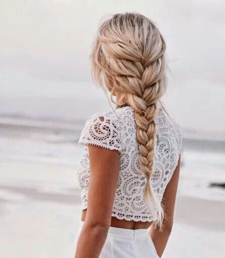
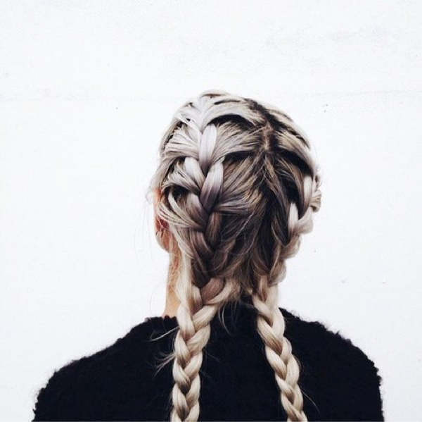
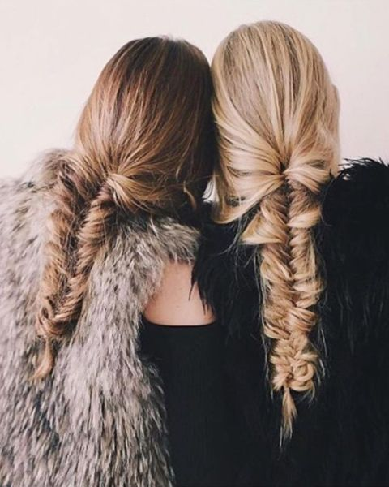
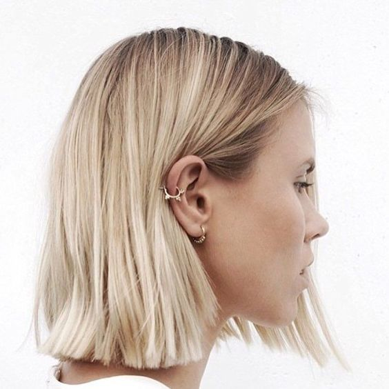
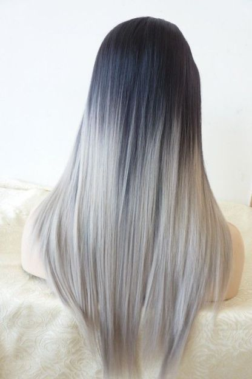
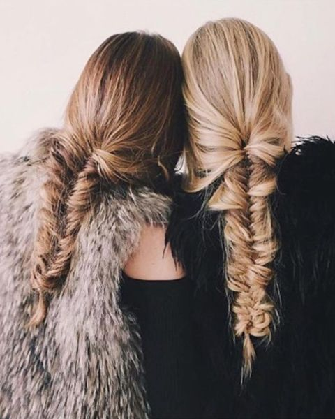
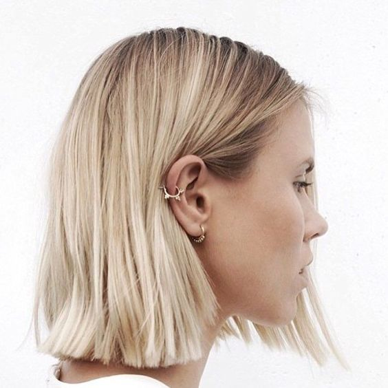
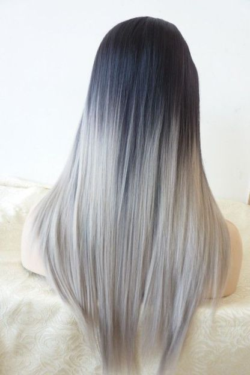
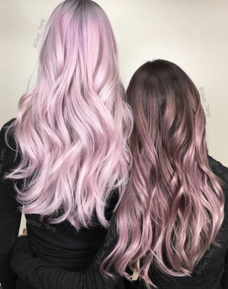

  
  
Olika slags flätor är både snyggt, lätt att göra och det går också fort när man vet vad man ska göra. Allt ifrån en vanlig fläta med tre partier till en mer avancerad fläta kan man ha både till vardag och om detär något speciellt.
Att klippa sitt hår kortare eller page är något som också har blivit mer populärt det senaste. Du kanske både kan se det mer och mer bland dina kompisar eller ute på stan men kanske också fler kändisar som klipper sitt hår kortare.
Grått, vitt, rosa, blått eller någon annan färg på håret kan man se mycket bilder på men kanske inget du väljer att göra själv eller så kanske du tycker det är jättesnyggt och då kan du göra det själv om du känner dig bekväm med det.
